本章学习目标（Objectives）
- 了解 Direct3D 在 3D 游戏编程中扮演的角色；
- 理解 COM 组件技术与页翻动（flipping）、深度缓冲、多重采样等概念；
- 掌握 2D/3D 疑似坐标与性能计量单位；
- 学会用性能计数器高精度计时，理解"时间差（dt）"驱动动画的原理；
- 掌握初始化 Direct3D 的完整步骤。
这是全书"动手"的第一章：写代码创建 DX12 设备、交换链，搭出贯穿全书的 Demo 框架。DX12 与 D3D11 最大的不同——一切要你自己显式管理——在本章就体现得淋漓尽致。
4.1 预备知识
4.1.1 Direct3D 12 概览
Direct3D 是底层图形 API：它只负责渲染，不管窗口、输入、音频。相比 D3D11 的"驱动层帮你优化"，DX12 把控制权交给你——对象生命周期、GPU 同步、内存管理、管线状态都要显式处理。好处：多线程渲染、更低驱动开销、更可控的性能；代价：代码更繁琐。
4.1.2 COM（组件对象模型）
DX12 接口都是 COM 接口（如 ID3D12Device）。要点：接口前缀 I、继承 IUnknown；用 Microsoft::WRL::ComPtr（智能指针）管理引用计数，自动 Release，避免内存泄漏。
ComPtr<ID3D12Device> md3dDevice; // 常用成员写法 md3dDevice->GetDeviceRemovedReason(); // -> 调用接口 md3dDevice.Reset(); // 显式释放
4.1.3 纹理与数据格式
2D 纹理是像素矩阵，每个像素有格式（DXGI_FORMAT），如 DXGI_FORMAT_R32G32B32_FLOAT（每通道 32 位浮点）。还有带 alpha 的 R8G8B8A8_UNORM、压缩格式 BC1–BC7 等。深度缓冲常用 DXGI_FORMAT_D24_UNORM_S8_UINT（24 位深度 + 8 位模板）。
4.1.4 交换链与页翻动
为避免"画到一半的画面被看到"，用双缓冲：前台缓冲显示，后台缓冲绘制，帧结束时翻转（Present）。两块缓冲组成交换链（IDXGISwapChain）。再配合垂直同步（Waitable Object / 帧延迟）避免撕裂。
4.1.5 深度缓冲（Depth Buffering）
画面上像素对应多个 3D 物体，深度缓冲记录每个像素当前最近距离，只让最近的片元通过——解决遮挡问题（画家算法的错误案例书中图示很清楚）。
4.1.6 多重采样抗锯齿（MSAA）
像素是方块，斜线会出现"楼梯"锯齿。MSAA 对每个像素采样多次并取加权平均，用 4xMSAA 时需要更大的后备/深度缓冲，并调用 GetDeviceRemovedReason 之类的 API 检查质量级别支持（书中用 CheckMultisampleQualityLevels）。
4.2 CPU/GPU 交互
命令队列与命令列表
DX12 的核心哲学：CPU 把渲染命令记录到命令列表（ID3D12GraphicsCommandList），再提交给命令队列（ID3D12CommandQueue），GPU 异步执行。CPU 记录、GPU 执行是两条流水线。
GPU 同步：Fence（栅栏）
CPU 怎么知道 GPU 干完活了？用 Fence（ID3D12Fence）：CPU 调 Signal 在队列里插个"路标"，GPU 跑到就写入 fence 值；CPU 用 SetEventOnCompletion + WaitForSingleObject 等待。典型用途：释放正在被 GPU 使用的资源前必须同步等待。
资源转换（Resource Transition）
GPU 上的资源有状态（渲染目标、着色器资源、拷贝目标……），用 ResourceBarrier 显式声明状态切换。这是 DX12 新增的心智负担，忘了写调试层会报错。
提交命令与多线程
命令列表从命令分配器（ID3D12CommandAllocator）分配内存；一帧内"记录→Close→ExecuteCommandLists"，下一帧前要 Reset 分配器（且必须等 GPU 执行完）。DX12 支持多线程各自记录命令列表再统一提交。
4.3 初始化 Direct3D
书中给出完整初始化清单（D3DApp 基类里实现）：
- 启用调试层：Debug 模式下
D3D12GetDebugInterface开 debug layer； - 创建设备：
D3D12CreateDevice(nullptr, featureLevel, IID_PPV_ARGS(&md3dDevice))，特性级用 11.0； - 创建 Fence：用于 CPU/GPU 同步，并创建同步事件句柄；
- 查询描述符大小：RTV/DSV/CBV-SRV-UAV 描述符的增量大小（设备相关，要运行时查询）；
- 创建命令队列、命令分配器、主命令列表；
- 创建交换链：描述后备缓冲数量（2）、格式、是否窗口化等；
- 创建描述符堆：RTV 堆（2 个）与 DSV 堆（1 个）；
- 创建 RTV/DSV：RTV 指向交换链的两个后台缓冲；DSV 指向创建的深度缓冲（DepthStencil 资源）；
- 设置视口（Viewport）与剪刀矩形（ScissorRect）。
对应的核心代码书中 D3DApp::Init 一节逐段讲解。后面章节都基于这个框架。
4.3.8 渲染一帧的骨架（Flush 前）
// 每帧大流程（简化） mCommandList->Reset(mDirectCmdListAlloc.Get(), nullptr); // ... 记录命令：资源屏障 → OM SetRenderTargets → ClearRenderTargetView / ClearDepthStencilView → Draw* → 屏障 mCommandList->Close(); mCommandQueue->ExecuteCommandLists(1, cmdListLists); mSwapChain->Present(0, 0); // 翻转呈现 // FlushCommandQueue：等 GPU 全部执行完
4.4 计时与动画
用 QueryPerformanceCounter / QueryPerformanceFrequency 实现高精度计时器（GameTimer 类）。核心概念：时间差 dt——两帧之间经过的时间。用它驱动动画与物理：
这样物体速度按"每秒"定义，与帧率无关（帧率波动动画依旧正确）。计时器还支持暂停/恢复：暂停期间的时间不计入游戏时间（书中用图解释"暂停导致的跳跃"问题）。
4.5 演示程序框架（D3DApp）
D3DApp 基类封装了：窗口创建、DX12 初始化、消息循环、游戏循环（Update → Draw）、调整窗口大小、全屏切换、暂停处理等。每章 Demo 继承它，只覆写 OnResize / Update / Draw 等虚函数。窗口过程 WndProc 通过静态转发把消息交给 app 单例处理。
4.6 调试 Direct3D 应用
- 调试层（Debug Layer）：打开后所有 API 误用都会在输出窗口打印错误——DX12 开发必备；
- COM 返回值：HRESULT 失败时用
DXTrace/ThrowIfFailed弹窗报错（书里封装了宏）； - GPU 报错：设备被移除时用
GetDeviceRemovedReason查原因； - 图形诊断：VS 内置的 Graphics Diagnostics 可以逐帧、逐 draw 调试。
🖼️ 原书插图（13 张，点击展开）
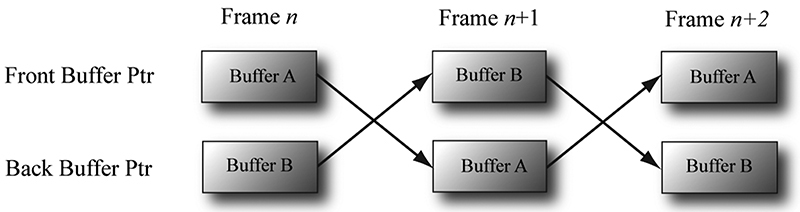
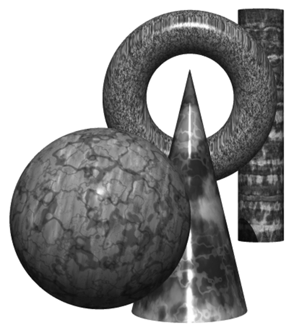
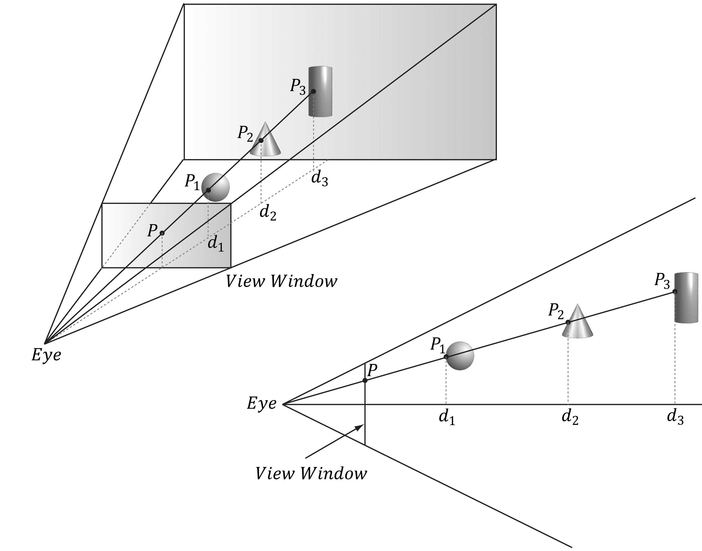
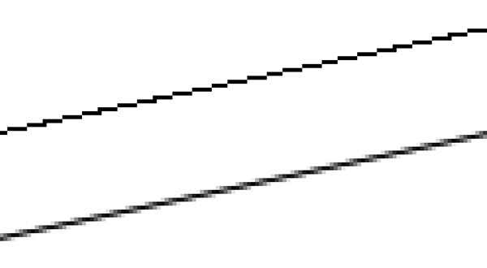
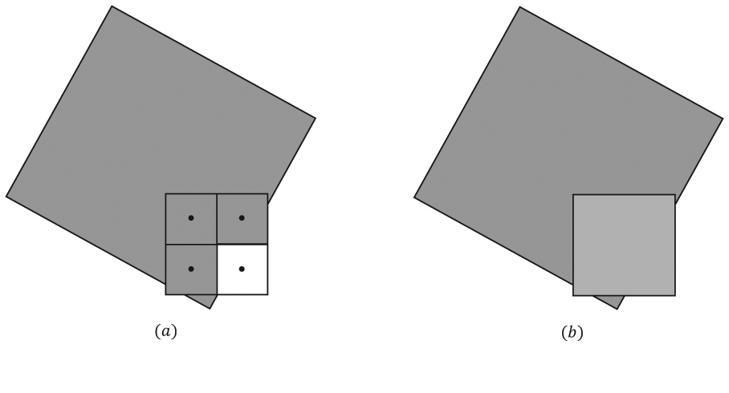
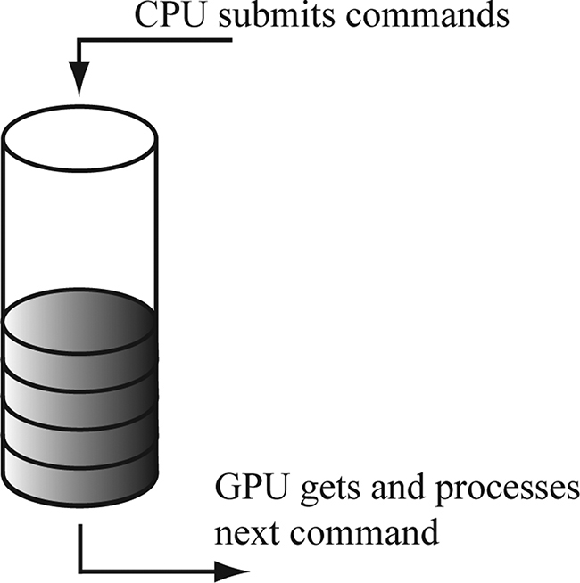
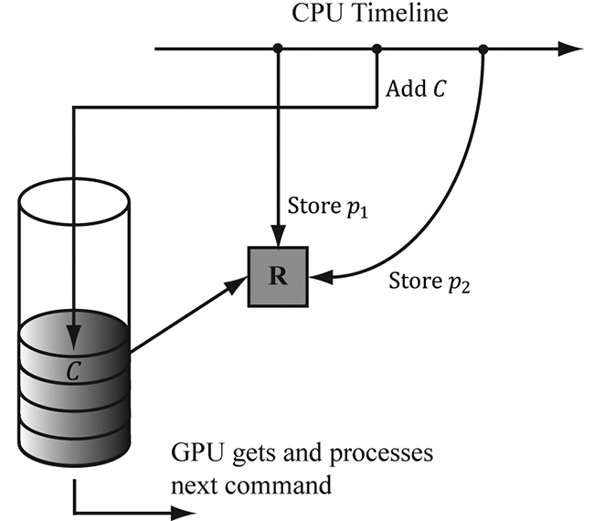
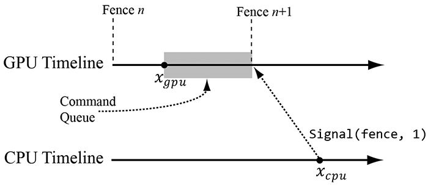
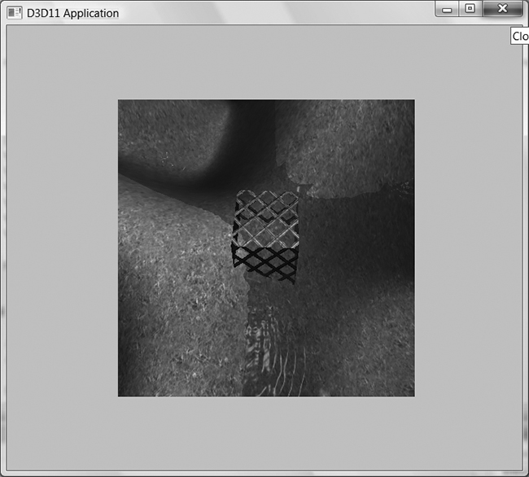
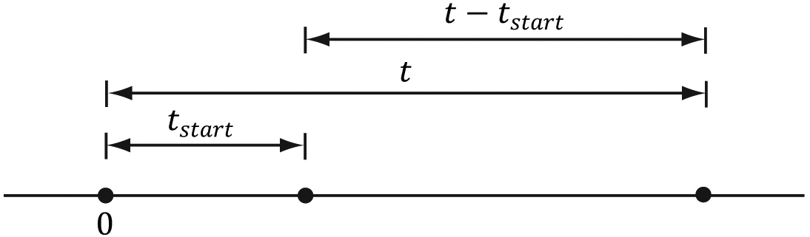
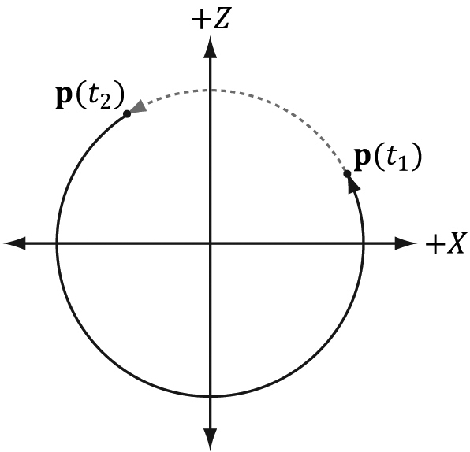
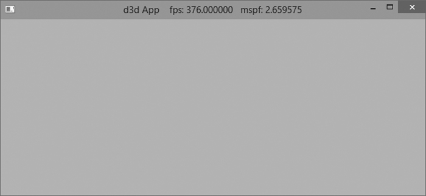
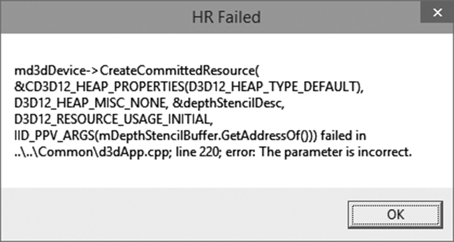